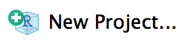
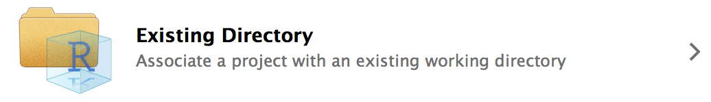

[1] TRUE FALSE FALSE[1] 1 2 3[1] 1.1 2.2 3.3[1] "District of Columbia" "Virginia" "Maryland" Deliberate steps should be taken to minimize the chance of making an error and maximize the chance of catching errors when errors inevitably occur. 1
Computational reproducibility should be embraced to improve accuracy, promote transparency, and prove the quality of analytic work.
Replication: the recreation of findings across repeated studies, is a cornerstone of science.
Reproducibility: the ability to access data, source code, tools, and documentation and recreate all calculations, visualizations, and artifacts of an analysis.
Computational reproducibility should be the minimum standard for computational social sciences and statistical programming.
Code should be written so humans can easily understand what’s happening—even if it occasionally sacrifices machine performance.
Analyses should be designed so strangers can understand each and every step without additional instruction or inquiry from the original analyst.
Research and data are non-rivalrous and can be non-excludable. They are public goods that should be widely and easily shared. Decisions about tools, methods, data, and language during the research process should be made in ways that promote the ability of anyone and everyone to access an analysis.
Analysts should seek to make all parts of the research process more efficient with clear communication, by adopting best practices, and by managing computation.
R is a free, open-source software for statistical computing. It is a fully-functioning programming language and it is known for intuitive, crisp graphics and an extensive, growing library of statistical and analytic methods. Above all, R boasts an enthusiastic community of developers, instructors, and users. The copyright and documentation for R is held by a not-for-profit organization called the R Foundation.
R comes from the S programming language and S-PLUS system. In addition to offering better graphics and more extensibility than proprietary languages, R has a pedagogical advantage:
The ambiguity [of the S language] is real and goes to a key objective: we wanted users to be able to begin in an interactive environment, where they did not consciously think of themselves as programming. Then as their needs became clearer and their sophistication increased, they should be able to slide gradually into programming, when the language and system aspects would become more important.
Source: Peng (2018)
RStudio is a free, open-source integrated development environment (IDE) that runs on top of R. In practice, R users almost exclusively open RStudio and rarely directly open R. When we say IDE, we mean a piece of software where you can write, or develop, code in an efficient way.
RStudio is developed by a for-profit company called Posit. Posit used to be called RStudio. Posit employs some of the R community’s most prolific, open-source developers and creates many open-source tools and resources. 2
While R code can be written in any text editor, the RStudio IDE is a powerful tool with a console, syntax-highlighting, and debugging tools. The RStudio IDE cheatsheet outlines some of the power of RStudio.


The RStudio Console contains the R command line and R output from previously submitted R code.
Code can be submitted by typing to the right of the last blue > and the hitting enter.
By default, there isn’t a record of code directly typed and submitted into the RStudio Console. So, most R programmers use .R scripts to develop R code before submitting code to the console.
.R scripts are simple text files with R code. They are similar to .py files in Python, .sas files in SAS, and .do files in Stata.
Good coding style is like correct punctuation: you can manage without it, butitsuremakesthingseasiertoread. ~ Wickham (n.d.)
Human interpretability is one of the six principles because clear code can save time and reduce the chance of making errors. After time, eyes can be trained to quickly spot incorrect code if a consistent R style is adopted.
First, note that R is case-sensitive. Capitalization is rare and deviations from the capitalization will throw errors. For example, mean() is a function but Mean() is not a function.
The tidyverse style guide is a comprehensive style guide that, in general, reflects the style of the plurality of R programmers. For now, just focus on consistency.
Data analysis is not possible without data structures for data. R has several important data structures that shape how information is stored and processed.
Vectors are one-dimensional arrays that contain one and only one type of data. Atomic vectors in R are homogeneous. There are six types of atomic vectors:
For now, the simplest way to create a vector is with c(), the combine function.
[1] TRUE FALSE FALSE[1] 1 2 3[1] 1.1 2.2 3.3[1] "District of Columbia" "Virginia" "Maryland" The class() function can be used to identify the type, or class, of an object. For example:
[1] "logical"[1] "numeric"[1] "character"If you create a vector with mixed data types, R will coerce all of the values to a single type:
[1] "TRUE" "1" "District of Columbia"[1] "character"Lists are one- or multi-dimensional arrays that are made up of other lists. Lists are heterogeneous - they can contain many lists of different types and dimensions. A vector is a list but a list is not necessarily a vector.
NULL is the null object in R. It means a value does not exist.
NA is a missing value of length 1 in R. NAs are powerful representations in R with special properties. NA is a contagious value in R that will override all calculations (Wickham and Grolemund 2017, sec. 20.2).
This forces programmers to be deliberate about missing values. This is a feature, not a bug!
R contains special functions and function arguments for handling NAs. For example, we can wrap a vector with missing values in is.na() to create a vector of Booleans where TRUE represents an element that is an NA and FALSE represents an element that is not an NA.
Note: NA and NULL have different meanings! NULL means no value exists. NA means a value could exist but it is unknown.
Matrices are multi-dimensional arrays where every element is of the same type. Most data in data science contains at least numeric information and character information. Accordingly, we will not use matrices much in this course.
Instead, data frames, and their powerful cousins tibbles, are the backbone of data science and this course. Data frames are two-dimensional arrays where each column is a list (usually a vector). Most times, each column will be of one type while a given row will contain many different types. We usually refer to columns as variables and rows as observations.
Here are the first six rows of a data frame with information about mammal sleep habits:
# A tibble: 6 × 11
name genus vore order conservation sleep_total sleep_rem sleep_cycle awake
<chr> <chr> <chr> <chr> <chr> <dbl> <dbl> <dbl> <dbl>
1 Cheetah Acin… carni Carn… lc 12.1 NA NA 11.9
2 Owl mo… Aotus omni Prim… <NA> 17 1.8 NA 7
3 Mounta… Aplo… herbi Rode… nt 14.4 2.4 NA 9.6
4 Greate… Blar… omni Sori… lc 14.9 2.3 0.133 9.1
5 Cow Bos herbi Arti… domesticated 4 0.7 0.667 20
6 Three-… Brad… herbi Pilo… <NA> 14.4 2.2 0.767 9.6
# ℹ 2 more variables: brainwt <dbl>, bodywt <dbl>tibbles are special data frames that have a few extra features:
tibbles print by defaulttibbles.R script# A tibble: 3 × 4
a b c d
<lgl> <int> <dbl> <chr>
1 TRUE 1 1.1 District of Columbia
2 FALSE 2 2.2 Virginia
3 FALSE 3 3.3 Maryland From this moment forward, I will use data frame to mean tibble.
R can operate on many different vectors and data frames in the same R session. This creates much flexibility. It also means most unique objects in an R session need unique names.
<- is the assignment operator. An object created on the right side of an assignment operator is assigned to a name on the left side of an assignment operator. Assignment operators are important for saving the consequences of operations and functions. Without assignment, the result of a calculation is not saved for use in a future calculation. Operations without assignment operators will typically be printed to the console but not saved for future use.
# this important calculation is saved to the R environment
important_calculation <- 2 + 2
# this important calculation is NOT saved to the R environment
2 + 2[1] 4Style note: Objects should be given names that are “concise and meaningful” (Wickham, n.d., sec. 2). Generally the names should be nouns and only use lowercase letters, numbers, and underscores _ (this is referred to as snake case).
+, -, *, and / are great, but data science requires a lot more than just basic arithmetic.
R contains many more functions that can perform mathematical operations, control your computer operating system, process text data, and more. In fact, R is built around functions.
Because R was developed by statisticians, R’s functions have a lot in common with mathematical functions.
Functions are recognizable because they end in (). For example, the following calculates the mean of a numeric vector two ways:
Modern R with the tidyverse (Rodrigues 2022) has a functional programming chapter that contains more information about functional programming in R.
Documentation for functions can be easily accessed by prefacing the function name with ? and dropping the ().
The documentation typically includes a description, a list of the arguments, references, a list of related functions, and examples. The examples are incredibly useful.
R functions typically contain many arguments. For example, mean() has x, trim, and na.rm. Many arguments have default values and don’t need to be included in function calls. Default values can be seen in the documentation. trim = 0 and na.rm = FALSE are the defaults for mean().
Arguments can be passed to functions implicitly by position or explicitly by name.
numeric_vector <- c(1, 2, 3, 4, 5, 6, 7, 8, 9, 10)
# by position (correctly)
mean(numeric_vector, 0.2)[1] 5.5Function calls can include arguments by position and by name. The first argument in most functions is data or x. It is custom to usually include the first argument by position and then all subsequent arguments by name.
Opening RStudio automatically loads “base R”, a fundamental collection of code and functions that handles simple operations like math and system management.
For years, R was only base R. New paradigms in R have developed over the last fifteen years that are more intuitive and more flexible than base R. Next week, we’ll discuss the “tidyverse”, the most popular paradigm for R programming.
All R programming will involve some base R, but much base R has been replaced with new tools that are more concise. Just know that at some point you may end up on a Stack Overflow page that looks like alphabet soup because it’s in a paradigm that you have not learned. Chapter 27 of R for Data Science (2e) (sometimes abbreviated R4DS) provides a great introduction to base R (Wickham, Çetinkaya-Rundel, and Grolemund 2023).
One other popular R paradigm is data.table. We will not discuss data.table in this class.
R is an extensible programming language. It was designed to allow for new capabilities and functionality.
R is also open source. All of it’s source code is publicly available.
These two features have allowed R users to contribute millions of lines of code that can be used by other users without condition or compensation. The main mode of contribution are R packages. Packages are collections of functions and data that expand the power and usefulness of R.
The predecessor of R, the S programming language, was designed to call FORTRAN subroutines. Accordingly, many R packages used to call compiled FORTRAN code. Now, many R packaged call compiled C++ code. This gives users the intuition of R syntax with better performance. Here’s a brief history of R and S.
Most R packages are stored on the Comprehensive R Archive Network (CRAN). Packages must pass a modest number of tests for stability and design to be added to CRAN.
install.packages()Packages can be directly installed from CRAN using install.packages(). Simply include the name of the desired package in quotes as the only argument to the function.
Installation need only happen once per computer per package version. It is customary to never include install.packages() in a .R script.
library()After installation, packages need to be loaded once per R session using the library() function. While install.packages() expects a quoted package name, it is best practice to use unquoted names in library().
It is a good idea to include library() statements at the top of scripts for each package used in the script. This way it is obvious at the top of the script which packages are necessary.
::Sometimes two packages have functions with the same name. :: can be used to directly access an exported R object from a package’s namespace.
dplyr::select()MASS::select()R Projects, proper noun, are the best way to organize an analysis. They have several advantages:
Every new analysis in R should start with an R Project. First, create a directory that holds all data, scripts, and files for the analysis. You can do this right in RStudio by clicking the “New Folder” button at the top of the “Files” tab located in the top or bottom right of RStudio. Storing files and data in a sub-directories is encouraged. For example, data can be stored in a folder called data/.
Next, click “New Project…” in the top right corner.

When prompted, turn your recently created “Existing Directory” into a project.

Upon completion, the name of the R Project should now be displayed in the top right corner of RStudio where it previously displayed “Project: (None)”. Once opened, .RProj files do not need to be saved. Double-clicking .Rproj files in the directory is now the best way to open RStudio. This will allow for the concurrent use of multiple R sessions and ensure the portability of file paths. Once an RStudio project is open, scripts can be opened by double-clicking individual files in the computer directory or clicking files in the “Files” tab.
Windows file paths are usually delimited with \. *nix file paths are usually delimited with /. Never use \ in file paths in R. \ is an escape character in R and will complicate an analysis. Fortunately, RStudio understands / in file paths regardless of operating system.
Never use setwd() in R. It is unnecessary, it makes code unreproducible across machines, and it is rude to collaborators. R Projects create a better framework for file paths. Simply treat the directory where the R Project lives as the working directory and directories inside of that directory as sub-directories.
For example, say there’s a .Rproj called starwars-analysis.Rproj in a directory called starwars-analysis/. If there is a .csv in that folder called jedi.csv, the file can be loaded with read_csv("jedi.csv") instead of read_csv("H:/alena/analyses/starwars-analysis/jedi.csv"). If that file is in a sub-directory of starwars-analysis called data, it can be loaded with read_csv("data/jedi.csv"). The same concepts hold for writing data and graphics.
This simplifies code and makes it portable because all relative file paths will be identical on all computers. To share an analysis, simply send the entire directory to a collaborator or share it with GitHub.
Here’s an example directory:

When Googling for R or data science help, set the search range to the last year or less to avoid out-of-date solutions and to focus on up-to-date practices. The search window can be set by clicking Tools after a Google search.
Stack Overflow contains numerous solutions. If a problem is particularly perplexing, it is simple to submit questions. Exercise caution when submitting questions because the Stack Overflow community has strict norms about questions and loose norms about respecting novices.
RStudio Community is a new forum for R Users. It has a smaller back catalog than Stack Overflow but users are friendlier than on Stack Overflow.
CRAN task views contains thorough introductions to packages and techniques organized by subject matter. The Econometrics, Reproducible Research, and and Social Sciences task views are good starting places.
We’ve created a Slack workspace for this class (which will be shared across both sections) and encourage you to ask questions in Slack. In general, we ask that you try to answer questions on your own using the sources above before posting in Slack. Practicing finding and applying the relevant information to answer your questions is an important data science skill! The teaching staff will be checking the Slack to help answer questions in a reasonable time frame and we also encourage you to answer each other’s questions - it’s a great way to improve your R skills!
Questions on Slack must be asked using reproducible examples. Simply copying-and-pasting questions or answers in the Slack channel is not allowed. If you’re unsure how to share a reproducible example without sharing your answers in a public channel, you can DM the teaching staff to be safe.
Since there is R code on the internet, ChatGPT has been trained on R code and has the capability to answer R coding questions. Exercise extreme caution when using ChatGPT! ChatGPT saves and uses the queries you provide it. This means that asking a question about sensitive data or code could expose that data. If you decide to use ChatGPT, only ask queries of it using a reproducible example with non-sensitive data. The diamonds dataset, loaded with ggplot::diamonds(), is a great candidate.
Just like machine translators are useful for communication but can stymie the ability to learn a second language, large language models are useful for creating code but can stymie learning R.
We encourage everyone to pursue mastery of R. This means feeling the terror of the blank page and internalizing the syntax of R without the crutch of LLMs before regularly using LLMs.
ChatGPT can be a powerful tool. Some helpful tips for using ChatGPT for coding questions are:
R is a powerful programming language that was developed initially for statistics but is now used in a variety of contexts. Key advantages to R include that it has a fantastic, custom-built IDE called RStudio and a large open source community of users that provides help and develops new packages. Like other open source programming languages, conducting data science in R supports the six principles of data analysis introduced at the start of this chapter.
(Eubank 2016) influenced our thinking on this issue and provides proactive steps for writing high-quality code using defensive programming.↩︎
Though we do not focus on the Python programming language in this course, Posit appears to be expanding its focus to Python in addition to R. This is an important development to track in the data science landscape. One key update is that, in 2023, Posit hired Wes McKinney. McKinney developed the Python pandas package which offers similar functionality to the tidyverse, a collection of R packages which we will discuss next week.↩︎
1.6 Comments
R will interpret all text in a
.Rscript as R code unless the code follows#, the comment symbol. Comments are essential to writing clear code in any programming language.It should be obvious what a line of clear R code accomplishes. It isn’t always obvious why a clear line of R code is included in a script. Comments should focus on the why of R code and not the what of R code.
The following comment isn’t useful because it just restates the R code, which is clear:
The following comment is useful because it adds context to the R code:
The following is useful because it avoids magic numbers.
Add comments to your
.Rthat clarify the why. Since we only know a few operations, the comments may need to focus on your why you picked your favorite numbers.